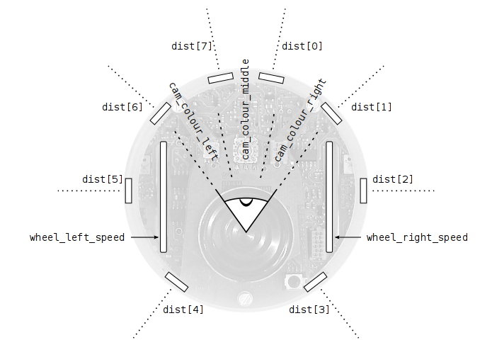

Esta página te enseña a utilizar ASEBA sin disponer de un robot físico. Si tienes un Thymio II, te invitamos a visitar su página aquí.
ASEBA challenge (imagen derecha) es un escenario simulado en el que robots controlados con Aseba compiten por energía (food). Puedes utilizarlo como un lugar para explorar tus códigos o como un juego educativo para el aprendizaje y la enseñanza de programación.
Para comenzar, ejecuta ASEBA challenge. Si aún no has instalado ASEBA, sigue las instrucciones de instalación. Una vez iniciado, has clic en ''Add a new robot'' para crear un nuevo robot, y luego asígnale un nombre. Si son varios jugadores, debes crear un robot para cada uno. Puedes suprimir todos los robots haciendo clic en “Remove all robots”. Puedes esconder los botones marcando la opción “Auto hide”: los botones solo se muestran cuando el puntero del mouse pasa cerca a ellos. Puedes tener una cámara automática, marcando la opción “Auto camera”: la posición de la cámara cambia automáticamente. Si prefieres mover la cámara manualmente, los controles son los siguientes:
Challenge indica la puntuación de cada robot en unos paneles translúcidos, suspendidos sobre la arena (terreno de juego). El objetivos es mantener el robot con vida, recolectando energía. Mientras el robot sobreviva, su marcador aumenta; si muere, se reducen a la mitad. Cuatro fuentes azules suministran energía a los robots que se acerquen a ellas. Cuando una fuente se agota, se vuelve roja y no suministra más energía. De vez en cuando, las fuentes se esconden, y los robots no pueden verlas sino hasta que reaparecen.
Cuando ASEBA challenge se esté ejecutando, puedes ejecutar ASEBA studio para programar tu robot. Debes ejecutar una instancia de studio desde cualquier PC, para controlar cada robot en la arena. Al inicio, studio te propone conectarte a un objetivo ASEBA (imagen de la derecha). Si has lanzado challenge en tu PC y has adicionado un robot, la opción por defecto será conectarte a ese robot. Si challenge se está ejecutando en otro PC, o si hay varios robots en la misma arena, debes especificar el PC en host y el robot en port. Los paneles translucidos indican el puerto (port) que corresponde a cada robot.
Si studio se está ejecutando (imagen derecha), podras utilizar la parte central de la ventana para editar el programa del robot. Se trata de un editor que revisa y compila tu código en tiempo real, indicándote si la sintaxis es correcta o no.Puedes consultar más detalles sobre studio en el menú Help->Studio. El menú Help->Language te ofrece información detallada del lenguaje de programación ASEBA.
Para programar un robot, primero debes entender cómo funciona. Un robot interactúa con el mundo en el siguiente ciclo: percibe el estado del mundo por medio de sensores, toma algunas decisiones con su computador incorporado, y ejecuta acciones a través de actuadores. Este ciclo se repite constantemente.
En challenge tu programas un robot e-puck. Este robot tiene 8 sensores de proximidad alrededor de su cuerpo y una cámara de 3 pixeles (20°/pixel) dirigida hacia adelante. Puedes leer cada pixel y además controlar la velocidad de las ruedas.

Ahora escribe tu primer controlador de robot. Digita las siguientes líneas en el editor:
wheel_left_speed = 5
wheel_right_speed = -5
Click en “Load” y luego en “Run”. Debes ver a tu robot dando vueltas en un mismo sitio. Este código solo define la velocidad de las ruedas cuando el robot inicia. Para mejorar su comportamiento, permítele al robot percibir su entorno para tomar decisiones. Por ejemplo para evadir obstáculos.
Para ejecutar el programa constantemente, puedes usar la función onevent timer. Por ejemplo, usando el sensor de proximidad frontal, podemos definir la velocidad de las ruedas con respecto a la distancia al objeto.
onevent timer
wheel_left_speed = dist[0] - 6
wheel_right_speed = dist[0] - 6
Mantener una distancia prudente a un objeto cercano es bueno, pero por ahora, el robot no puede moverse a ninguna otra parte. Para hacer que el robot se pasee por ahí, debes entender cómo se desplaza.
El e-puck simulado en challenge es un ejemplo de un robot con ruedas diferenciales; para cambiar la dirección se definen velocidades diferentes en sus ruedas derecha e izquierda. Si ambas ruedas tienen la misma velocidad, el robot se desplaza hacia adelante (o atrás). Si las velocidades de las ruedas son en sentidos opuestos, el robot comenzará a girar alrededor del mismo punto. Los vehículos industriales con orugas (caterpillar) utilizan el mismo principio.
El siguiente código hace que el robot evite obstáculos y se mueva hacia a delante:
onevent timer
wheel_left_speed = dist[1] - 6
wheel_right_speed = dist[6] - 6
Los controladores que hemos visto hasta ahora, vinculan los valores de los sensores a la velocidad de las ruedas por medio de expresiones matemáticas, pero no se toman decisiones de tipo ''si…entonces…''. En algunos casos, resulta conveniente tomar decisiones; por ejemplo, si queremos que el robot se mueva hacia adelante o gire en el mismo punto si realizar trayectorias curvas. Mira este ejemplo:
onevent timer
var dists = dist[6] + dist[7] + dist[0] + dist[1]
if dists < 48 then
wheel_left_speed = 5
wheel_right_speed = -5
else
wheel_left_speed = 5
wheel_right_speed = 5
end
El lenguaje de programación ofrece otras estructuras interesantes, como el ciclo while, que ejecuta un bloque de código iterativamente, siempre y cuando se cumpla una determinada condición. Otra estructura es el ciclo for, que ejecuta un bloque de código un determinado número de veces y actualiza cada vez, el valor de una variable (contador). El menú Help -> Language te lleva a una lista de todas las estructuras disponibles, acompañadas de ejemplos.
Juega un momento con el evasor de obstáculos para que entiendas mejor el funcionamiento de los sensores, los actuadores y la dinámica del robot. Explora tranquilamente otras posibilidades: se trata de un simulador y no hay ningún riesgo de que sufrir daños.
Si ya cogiste confianza, trata de hacer que tu robot se dirija a las fuentes de energía cuando estén azules (0,100,100 en RGB) y las evite cuando estén rojas. Ten en cuenta que el color del fondo es gris (50,50,50). Reta a tus amigos y has el mejor controlador para tu robot!. Puedes cambiar el color del robot modificando las variables color_red, color_green y color_blue, así podrás fingir ser una fuente de energía. Para saber si alguien engaña a tu robot, revisa la variable de energía; si no aumenta mientras observas obstáculo azul, quiere decir que te están engañando!.
Challenge está diseñado para que tu aprendas robótica, programación y ASEBA, al mismo tiempo que te diviertes.
Con seguridad te interesará consultar:
{kind=link}
{kind=link}